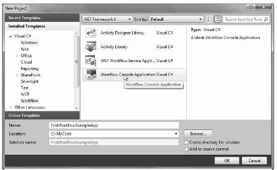
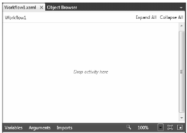
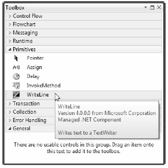
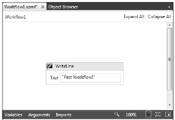

As you build a workflow-enabled application, you will undoubtedly notice that it “feels different” from building a typical .NET application. For example, up until this point in the text, every code example began by creating a new project workspace (most often a Console Application project) and involved authoring code to represent the program at large. A WF application also consists of custom code; however, in addition, you are building directly into the assembly a model of the business process itself.
Another aspect of WF which is quite different from other sorts of .NET applications is that a vast majority of your workflows will be modeled in a declarative manner, using an XML-based grammar named XAML. Much of the time, you will not need to directly author this markup, as the Visual Studio 2010 IDE will do so automatically as you work with the WF designer tools. This is a big change in direction from the previous version of the WF API, which favored using C# code as the standard way to model a workflow.
Note Be aware that the XAML dialect used within WF is not identical to the XAML dialect used for WPF. You will learn about the syntax and semantics of WPF XAML in Chapter 27, as unlike WF XAML, it is quite common to directly edit designer-generated WPF XAML.
To get you into the workflow mindset, open Visual Studio 2010. From the New Project dialog box, pick a new Workflow Console Application project named FirstWorkflowExampleApp (see Figure 26-1).
Figure 26-1 Creating a new console based workflow application
Now, consider Figure 26-2, which illustrates the initial workflow diagram generated by Visual Studio 2010. As you can see, there is not too much happening at this point, just a message telling you to drop activities on the designer.
Figure 26-2 A workflow designer is a container for activities that model your business process
For this first simple test workflow, open the Visual Studio 2010 Toolbox, and locate the WriteLine activity under the Primitives section (Figure 26-3).
Figure 26-3 The Toolbox will show you all the default activities of WF 4.0
Once you have located this activity, drag it onto of the designer’s drop target (be sure you drag it directly onto the area which says Drop activity here), and enter a friendly double quoted string message into the Text edit box Figure 26-4 shows one possible workflow.
Figure 26-4 The WriteLine activity will display text to a TextWriter, the console in this case
Now, if you close the workflow designer, you can right click on Workflow1.xaml using the Solution Explorer and pick the “View code” menu option. This will display the underlying XAML representation of your workflow. As you can see, the root node of this XML-based document is <Activity>. In the opening declaration of the root element, you will find a large number of XML namespace definitions, almost all of which have the token clr-namespace embedded within.
As explained in more detail in Chapter 27, when a XAML file needs to reference the definitions of .NET types contained in external assemblies (or a different namespace in the current assembly), you are required to build a .NET to XAML mapping using the clr-namespace token:
<configuration> <system.web> <compilation debug="false" targetFramework="4.0" /> </system.web> <system.serviceModel> <behaviors> <serviceBehaviors> <<Activity mc:Ignorable="sap" x:Class="FirstWorkflowExampleApp.Workflow1" xmlns="http://schemas.microsoft.com/netfx/2009/xaml/activities" xmlns:mc="http://schemas.openxmlformats.org/markup-compatibility/2006" xmlns:mv="clr-namespace:Microsoft.VisualBasic;assembly=System" xmlns:mva="clr-namespace:Microsoft.VisualBasic.Activities;assembly=System.Activities" xmlns:s="clr-namespace:System;assembly=mscorlib" xmlns:s1="clr-namespace:System;assembly=System" xmlns:s2="clr-namespace:System;assembly=System.Xml" xmlns:s3="clr-namespace:System;assembly=System.Core" xmlns:sa="clr-namespace:System.Activities;assembly=System.Activities" xmlns:sad="clr-namespace:System.Activities.Debugger;assembly=System.Activities" xmlns:sap="http://schemas.microsoft.com/netfx/2009/xaml/activities/presentation" xmlns:scg="clr-namespace:System.Collections.Generic;assembly=System" xmlns:scg1="clr-namespace:System.Collections.Generic;assembly=System.ServiceModel" xmlns:scg2="clr-namespace:System.Collections.Generic;assembly=System.Core" xmlns:scg3="clr-namespace:System.Collections.Generic;assembly=mscorlib" xmlns:sd="clr-namespace:System.Data;assembly=System.Data" xmlns:sl="clr-namespace:System.Linq;assembly=System.Core" xmlns:st="clr-namespace:System.Text;assembly=mscorlib" xmlns:x="http://schemas.microsoft.com/winfx/2006/xaml"> <x:Members> <x:Property Name="MessageToShow" Type="InArgument(x:String)" /> </x:Members> <sap:VirtualizedContainerService.HintSize> 251,240 </sap:VirtualizedContainerService.HintSize> <mva:VisualBasic.Settings> Assembly references and imported namespaces for internal implementation </mva:VisualBasic.Settings> <WriteLine sad:XamlDebuggerXmlReader.FileName= "C:\My Code\ FirstWorkflowExampleApp\Workflow1.xaml" sap:VirtualizedContainerService.HintSize="211,200" Text="[MessageToShow]" /> </Activity>behavior> <!-- To avoid disclosing metadata information, set the value below to false and remove the metadata endpoint above before deployment --> <serviceMetadata httpGetEnabled="true"/> <!-- To receive exception details in faults for debugging purposes, set the value below to true. Set to false before deployment to avoid disclosing exception information --> <serviceDebug includeExceptionDetailInFaults="false"/> </behavior> </serviceBehaviors> </behaviors> </system.serviceModel> <system.webServer> <modules runAllManagedModulesForAllRequests="true"/> </system.webServer> </configuration>
The <Activity> element is the container of all other tasks which represent your workflow. Here, we have only one other sub-activity, <WriteLine>. Notice that the Text attribute has been set based on the data you entered in the workflow designer.
Now remember that when you are building workflows using Visual Studio 2010, you will typically not be required to manually modify this markup. Using this designer (and the various WF-centric tools integrated into Visual Studio 2010), you are able to model your process while the markup is generated by the IDE. Because of this fact, this chapter will not dive into the details of WF XAML to any great degree. However, feel free to view the markup generated by the IDE as you drag and drop activities onto the designer (this will get you in the proper mindset for your examination of WPF).
In any case, the markup found in a XAML file always maps to “real“ types in a .NET assembly. For example, each element in a XAML file (such as <Activity>) is a declarative way to define a .NET object (such as System.Activities.Activity). Attributes which appear in the opening element definition map to properties or events on the related class type. At runtime, your markup will be fed into a runtime object model, where each element description will be used to set the state of the related .NET object.
Allowing us to define the structure of a workflow in a declarative manner using XAML has a number of benefits, most notably tool support. For example, it is possible to host the same Visual Studio 2010 designer tools in a custom GUI application. By doing so, you can build a simple tool which can be used by the non-programmers on your team to create the business processes they wish to have you implement in your products. Their design can be saved as a *.xaml file and imported into your .NET projects.
Another compelling benefit of using markup to define a workflow is that it now becomes possible to (easily) load in external XAML files into memory on the fly and thereby change how your business process operates. For example, you could author code that reads a *.xaml file on the fly and hydrates the related object model. Since your workflow logic is not hard-coded into your assembly, changing the functionality of the business process could be as simple as changing the markup and restarting your application.
Do understand that WF is far more than a pretty designer that allows you to model the activities of a business process. As you are building your WF diagram, your markup can always be extended using code to represent the runtime behavior of your process. In fact, if you wanted to do so, you could avoid the use of XAML all together and author the workflow using nothing but C#. If you were to this, however, you would be back to the same basic issue of having a body of code that is not readily understandable to non-technical staff.
If you were to run your application at this point, you would see your message display to the console window:
First Workflow! Press any key to continue . . .
Fair enough; however, what started this workflow? And how were you able to ensure that the console application stayed running long enough for the workflow to complete? The answers to these questions require an understanding of the workflow runtime engine.